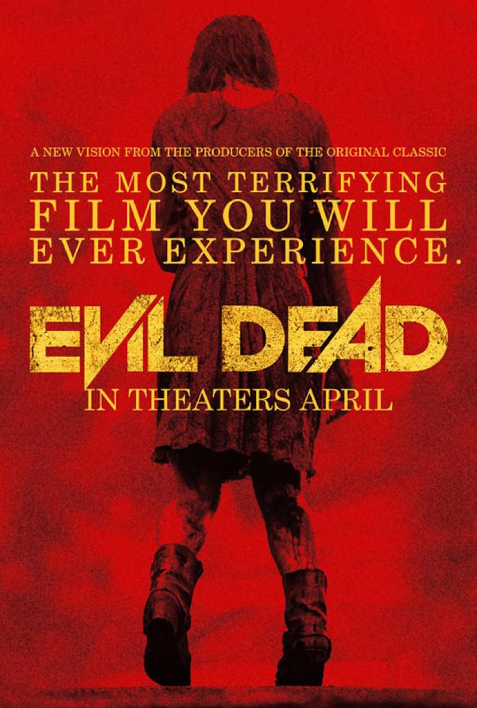
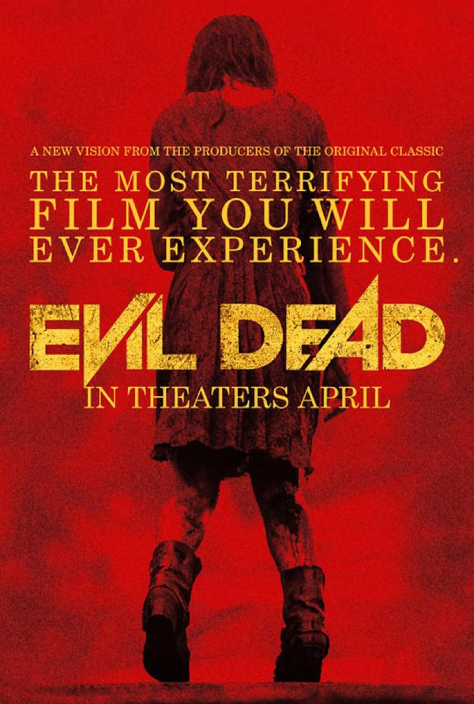

Evil Dead(2013)
Evil Dead(2013)
Some young adults get trapped at a spooky cabin,
with a spooky basement,
and a spooky book.
IT’S THE SPOOKY TRIFECTA.
Oh and also a basement full of dead cats. So anyway, they find this book bound in HUMAN SKIN,
and of course one of them reads the words aloud, because WHY NOT?!?
I’ll leave the rest to your imagination, so I don’t spoil it.
Jurassic Park(1993)
Jurassic Park(1993)
This movie gave me nightmares from ages 2-5 (possibly 7… or 20…)
But for real, if the T-Rex scene didn’t scare you, you were either not at a very impressionable age,
or you’re superhuman.
The special effects in this movie were groundbreaking at the time,
so you have to give it some serious props for that.
American Psycho(2000)
American Psycho(2000)
This movie isn’t scary at all. What it is, however, is creepy.
Just about everything the main character, a wealthy Wall Street dude named Patrick Bateman,
does, is SO unsettling. At one point in the movie he tries to feed an ATM machine a stray cat….
BUT, he hits a character played by Jared Leto in the face with an axe though,
and after Leto’s disgustingly bad performance as the Joker in Suicide Squad,
I’d say that was pretty satisfying to watch
Dead Silence(2007)
Dead Silence(2007)
This is one of those movies that’s really only scary until you notice how mind numbingly stupid it is.
This movie's plot SUCKS. It’s about some scary ghosty lady that collects
tongues because she doesn’t like talking or some shit.
Watch this movie if you want a good excuse to turn off your TV, go outside for a while,
and rethink your horrible choice in movie selection.